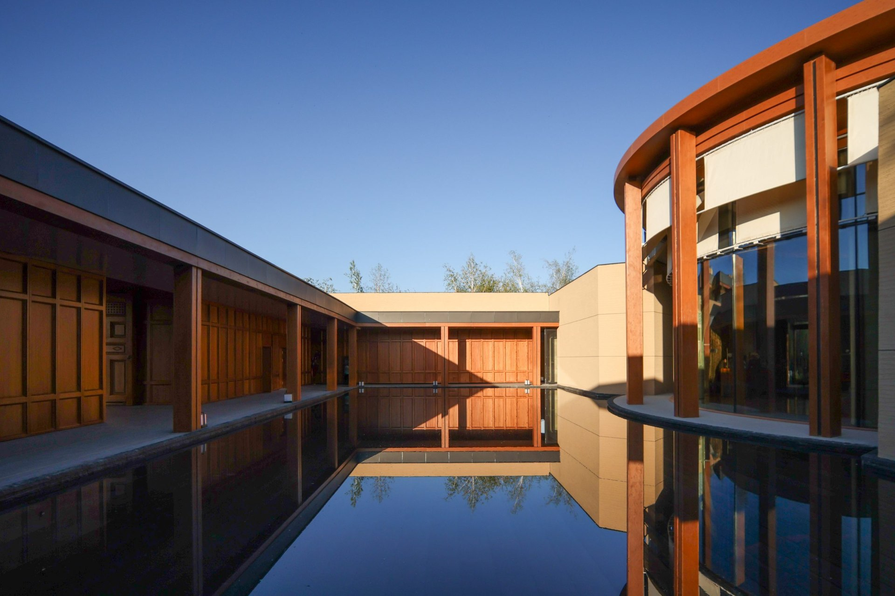
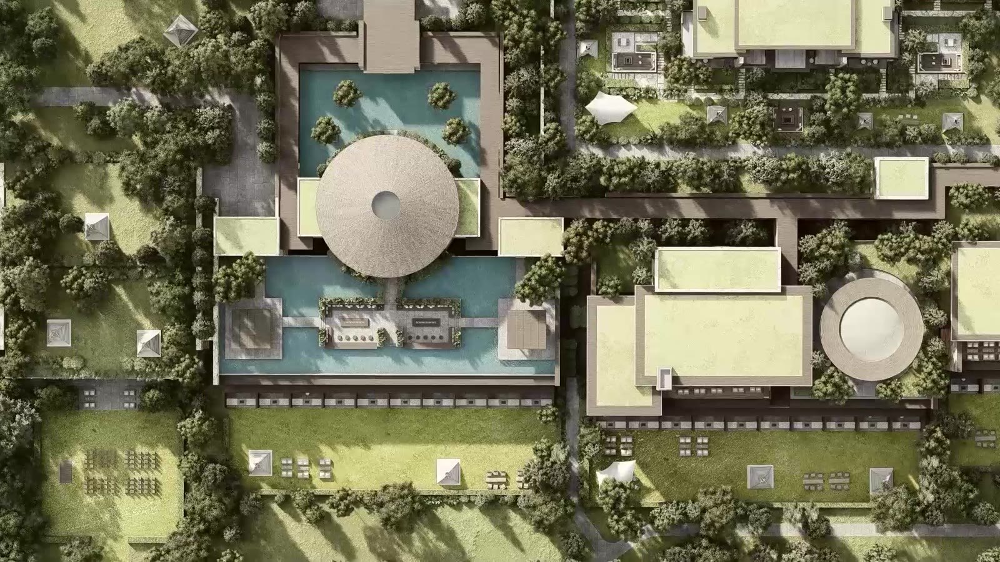
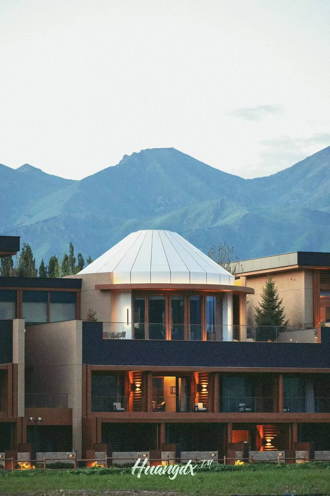
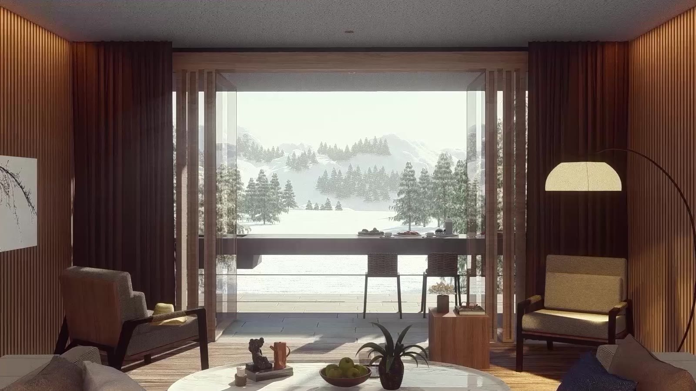

中国 · 新疆 / 重点项目
那拉提英迪格
那拉提英迪格与智选假日酒店
从草原文化、低密度建筑和抵达体验出发，构筑那拉提的度假目的地。
阅读项目
01设计挑战
不止一座酒店，而是一处目的地。
赫图对那拉提的设计构想，将酒店居住与草原生活、地域文化联系起来。项目同时包含英迪格与智选假日酒店，并以当地聚落肌理、特色居所和牧民生活作为设计线索。
核心问题是：如何让地域性成为真实的空间体验，而不只是表面的装饰主题？从已发布的设计说明出发，项目的着眼点在于规划布局、建筑与户外生活的关系，以及人们与周围景观的相遇。



02建筑回应
让建筑的尺度，回到场地。
已发布的总图呈现了低密度的建筑组合，而不是一整块连续的酒店体量。赫图将毡房意象引入组团，作为其中具有辨识度的节点。选取的视频画面进一步呈现了两种组织方式：主要酒店组团，以及由路径联系的分散圆形建筑。
赫图的开业介绍记录了米色墙面、木构元素与深色金属屋面的立面材料组合。从设计图像到已发布摄影，可以读到实体墙面、开放框架和建筑间隙的不同节奏。水面和种植庭院让这些过渡空间更加清晰。




03落成记录
2025年7月，开启新的篇章。
赫图发布的开业消息记录：那拉提英迪格与智选假日酒店于2025年7月1日正式开业。其中，英迪格酒店拥有151间客房及套房，借助全景窗或观景阳台，与草原及山地景观建立联系。
项目由图纸与模型走向正式运营的目的地。已发布摄影呈现了山地背景中的建筑：圆形屋面、框景门廊、种植庭院与水面，将不同组团联系成为一个场所。

流动的项目影像
00:15 · 20242024年设计短片。总图、房间与组团：在三个尺度中阅读同一个场所。画面为设计阶段可视化，网页版本无声。

04项目资料
- 项目
- Hotel Indigo & Holiday Inn Express
- 地点
- 中国新疆那拉提
- 事务所
- H2 Architecture / 赫图建筑
- 酒店集团
- IHG
- 设计档案年份
- 2023
- 设计视频
- 2024
- 开业
- 1 July 2025
- 英迪格客房
- 151间客房及套房
- H2发布内容所述范围
- 规划与建筑设计